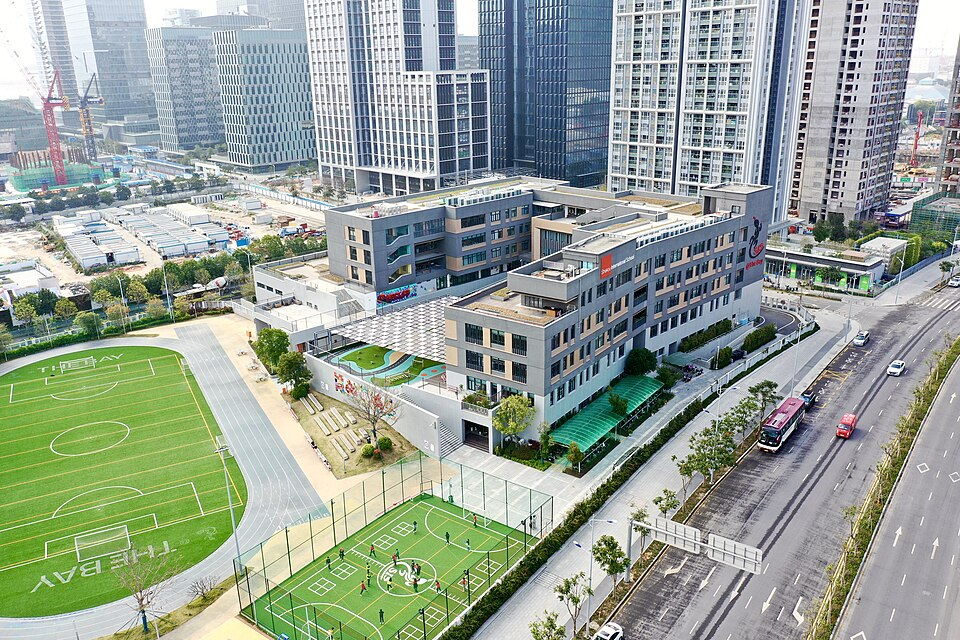

셔코우 인터내셔널 스쿨 더 베이(the Bay) 캠퍼스 · 사진: Ahuangsis / Wikimedia Commons, CC BY-SA 4.0
셔코우 인터내셔널 스쿨(Shekou International School, SIS) — 캠퍼스가 셋이라 아이는 학교를 안 옮기고도 두 번 이사합니다
1. 어떤 학교인가
셔코우 인터내셔널 스쿨(Shekou International School, SIS)은 1988년에 선전에 주재하던 외국계 기업 가정의 자녀를 위해 세워진 것으로 알려져 있습니다. 설립에 해외 석유회사 네 곳이 참여한 것으로 전해지는데, 선전이 경제특구로 막 열리던 시기에 주재원 가족이 몰리면서 학교가 필요해졌던 배경입니다. 지금도 선전에서 오래된 축에 드는 국제학교입니다.
운영은 미국 뉴저지 프린스턴에 있는 비영리 기관 ISS(International Schools Services)가 맡는 것으로 알려져 있습니다. 한 기업이 소유한 영리 법인이 아니라, 전 세계 국제학교 운영을 맡아 온 비영리 기관이 관리하는 형태입니다. 인증은 미국 WASC를 받았고, 초등은 IB PYP, 고등은 IB 디플로마를 운영하는 것으로 안내되어 있습니다. 대상 연령은 너서리(만 2세 무렵)부터 Grade 12까지입니다.
※ 재학생 수·학비·합격률 같은 수치는 해마다 달라지고 자료마다 차이가 커서 이 글에서는 쓰지 않겠습니다. 학교 입학처의 올해 안내로 확인하세요.
2. 핵심 — 세 캠퍼스가 학년으로 갈립니다
이 학교를 이해하는 데 가장 중요한 부분입니다. SIS는 건물 하나짜리 학교가 아닙니다. 공개된 안내에 따르면 학년대별로 캠퍼스가 이렇게 나뉘어 있는 것으로 알려져 있습니다.
| 캠퍼스 | 받는 학년 | 가정이 계산해야 할 것 |
|---|---|---|
| 징산(Jingshan) | 너서리 ~ 킨더가튼 | 주거단지 안에 있는 유아 과정 — 첫 2~3년의 통학 |
| 더 베이(the Bay) | Grade 1 ~ Grade 5 | 첫 번째 전환 — Grade 1 올라갈 때 건물이 바뀜 |
| 넷밸리(Net Valley) | Grade 6 ~ Grade 12 | 두 번째 전환 — Grade 6 올라갈 때 또 바뀜 |
즉 유아 과정부터 쭉 다니는 아이는 전학을 한 번도 하지 않고도 다니는 건물이 두 번 바뀝니다. 학교는 그대로인데 등하교 경로·통학 버스 노선·하교 시간이 달라집니다.
주재원 가정에 이것이 왜 중요하냐면, 임차 계약은 보통 2~3년 단위이기 때문입니다. 집을 구할 때 지금 다니는 캠퍼스만 보고 정하면, 계약 기간 중간에 아이가 다른 캠퍼스로 올라가면서 통학이 갑자기 불편해지는 경우가 생깁니다. 그래서 한국에서 떠나기 전에 종이 한 장에 세 줄만 적어 두시길 권합니다.
· ① 아이가 Grade 1이 되는 해는 언제인가
· ② 아이가 Grade 6이 되는 해는 언제인가
· ③ 지금 보는 집의 임차 계약은 몇 년인가 — ①·②와 겹치는가
이 세 줄만 있으면 부동산 계약 전에 학교에 물어볼 질문이 명확해집니다. "그 학년이 되면 어느 캠퍼스로 가고, 저희 집 쪽에서 통학 버스가 운행됩니까?" 캠퍼스 배치와 학년 구분은 학교 사정에 따라 조정될 수 있으니, 아이가 그 학년이 되는 해를 넣어서 입학처에 확인하시는 편이 정확합니다.
참고로 이런 연령·학년별 캠퍼스 분리는 아시아 국제학교에서 드물지 않습니다. 호치민의 ISHCMC는 나이로 캠퍼스가 갈리고, 도쿄의 아오바 재팬은 학년이 올라가면 다니는 구(区)가 바뀝니다. 다만 SIS는 전환 지점이 두 번이라는 점이 다릅니다.
3. 한 학교 안에 영어 과정과 프랑스 과정이 함께 있습니다
또 하나 잘 알려지지 않은 부분입니다. SIS는 영어로 하는 본 과정 외에 프랑스 국제과정(French International Program)을 함께 운영하는 것으로 알려져 있습니다. 유아 과정부터 Grade 9 무렵까지 운영되고, 프랑스 교육부의 인증을 받은 선전 내 학교로 소개되어 있습니다.
한국 가정에 직접 해당되는 경우는 많지 않지만, 알고 계시면 두 가지가 설명됩니다. 첫째, 학교 안에 영어가 아닌 수업을 듣는 학생들이 함께 있다는 점. 둘째, 검색하다 보면 같은 학교 이름으로 프랑스어 안내문이 나와서 다른 학교인가 싶어지는 점입니다. 같은 학교가 맞습니다.
아이가 영어 과정을 다니더라도 제2외국어로 프랑스어를 고르는 경우가 있는데, 이때는 프랑스어 과목 선택 쪽을 함께 보시면 도움이 됩니다. 중화권 학교이므로 중국어도 자연스럽게 선택지에 들어옵니다.
4. 선전은 홍콩 옆이지만, 제도는 옆에 있지 않습니다
선전은 홍콩과 국경을 맞대고 있습니다. 그래서 발령을 받으면 "선전 학교와 홍콩 학교를 같이 보면 되겠네"라고 생각하시는 분이 많습니다. 지리적으로는 맞지만, 입학 제도는 전혀 다른 두 체계입니다.
중국 본토의 외국인 자녀 대상 국제학교는 해당 지역 교육 당국이 정한 등록 자격 안에서만 등록이 가능한 별도 범주로 운영됩니다. 이 부분은 상하이를 예로 중국 본토 국제학교의 등록 자격 글에서 자세히 정리해 두었으니 거기서 확인해 주세요. 여권·거주 형태에 따라 가능 여부가 갈리고, 해마다 바뀔 수 있어 이 글의 설명으로 판단하지 마시고 반드시 학교 입학처에 직접 확인하셔야 합니다.
홍콩 학교를 함께 보시려면 HKIS·해로 인터내셔널 스쿨 홍콩·디스커버리 칼리지 쪽을 참고하시되, 선전에 살면서 매일 홍콩으로 통학하는 방식은 아이의 학년과 하교 시간을 놓고 현실적으로 계산해 보셔야 합니다. 어린 학년일수록 권하기 어렵습니다.
5. 한국(주재원) 학생이 겪는 어려움
· ① 캠퍼스가 바뀌는 해에 적응이 한 번 더 필요합니다. Grade 1, Grade 6은 원래도 과정이 달라지는 지점인데 건물까지 바뀝니다. 특히 Grade 6은 담임 한 명에서 과목별 교사 여러 명으로 넘어가는 시기라 부담이 겹칩니다. → 국제학교 학년 체계
· ② 초등 IB PYP는 "진도"가 안 보입니다. 교과서로 진도가 나가는 방식이 아니라 탐구 단원으로 묶여 있어서, 부모가 보기에 아이가 뭘 배우는지 모르겠는 시기가 옵니다. → 리딩 레벨 읽는 법
· ③ 영어로 된 수학에서 막힙니다. 계산은 되는데 문제 지문을 못 읽고, 풀이 과정을 문장으로 설명하라는 요구에서 점수를 잃습니다. → 알지브라 공부법
· ④ 고등 IB 디플로마는 과목 6개에 소논문·지식이론·창의체험활동이 붙습니다. 중등에서 기한 관리가 안 되던 아이는 여기서 크게 흔들립니다. → IB DP 점수 완전정복
· ⑤ 학년 중간에 들어오면 과정 차이가 그대로 드러납니다. 한국 학교에서 오면 기준표 채점 자체가 처음이라, 영어 실력과 별개로 형식을 익히는 데 시간이 걸립니다. → 편입·전학 총정리
6. 그래서 이렇게 준비합니다
· 영어 — 회화가 아니라 학습 영어입니다. 지시어(describe·explain·analyse·evaluate)를 구분하고, 주장·근거·설명 구조로 문단을 쓰는 훈련이 먼저입니다. → 국제학교 영어 공부법
· 수학 — 한국에서 배운 개념은 대개 충분합니다. 부족한 건 영어 용어와 서술입니다. 용어를 한국어·영어로 함께 정리하고 풀이를 영어 문장으로 적는 연습을 같이 합니다.
· 과제 관리 — 과제를 받은 주에 기준표를 함께 읽고 "무엇을 요구하는지"를 아이 입으로 말하게 합니다. → 숙제·과제 관리
· 캠퍼스가 바뀌는 해 — Grade 1·Grade 6으로 올라가는 여름에는 학습보다 생활 리듬이 먼저 흔들립니다. 그 학기 초에는 새 과목의 평가 방식부터 같이 확인해 둡니다. → 형성평가·총괄평가
· 다음 학년 자리 — 국제학교는 재등록 절차가 따로 있습니다. 주재원 가정은 발령 연장 여부와 기한이 어긋나기 쉬우니 미리 보세요. → 국제학교 재등록
7. 선전의 강점 — 시차 1시간, 화상과외가 가장 편한 지역
중국 선전은 한국보다 1시간 느립니다. 선전 오후 5시가 한국 저녁 6시입니다. 아이가 학교에서 돌아온 직후에 한국 강사진과 실시간 수업을 잡을 수 있어서, 주재원 지역 가운데 시차 부담이 가장 적은 축에 듭니다.
현지에서 IB 기준표 채점을 한국어로 풀어 줄 강사를 찾기는 쉽지 않습니다. 영어 회화 수업은 많지만, 아이가 실제로 막히는 지점은 회화가 아니라 과제가 요구하는 것을 읽어 내는 일입니다. 아이의 실제 과제물과 돌려받은 채점표를 화면에 띄워 놓고 1:1로 함께 읽는 수업이 가장 빠릅니다.
정리
셔코우 인터내셔널 스쿨은 1988년에 문을 연 선전의 오래된 국제학교로, 초등 IB PYP와 고등 IB 디플로마를 운영하고 프랑스 국제과정을 함께 두고 있는 것으로 알려져 있습니다. 가장 큰 특징은 징산·더 베이·넷밸리 세 캠퍼스가 학년으로 갈린다는 점입니다. 집을 구하기 전에 아이가 Grade 1이 되는 해, Grade 6이 되는 해, 임차 계약 기간 세 줄을 먼저 적어 두세요. 그리고 중국 본토 학교는 등록 자격부터 확인하셔야 합니다. 30분 무료 상담으로 아이의 현재 학년에 맞춰 무엇부터 준비할지 짚어 드리겠습니다.